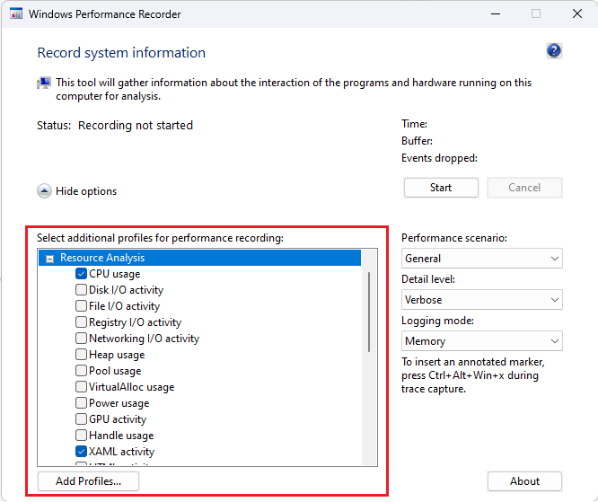
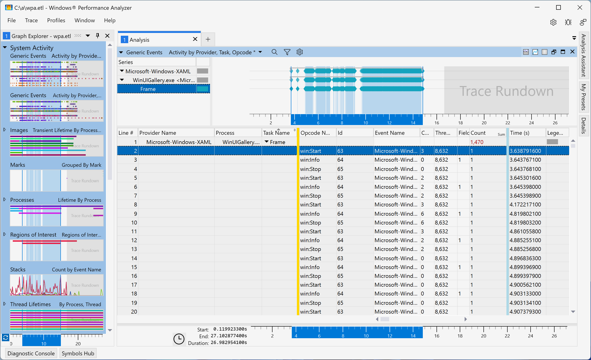
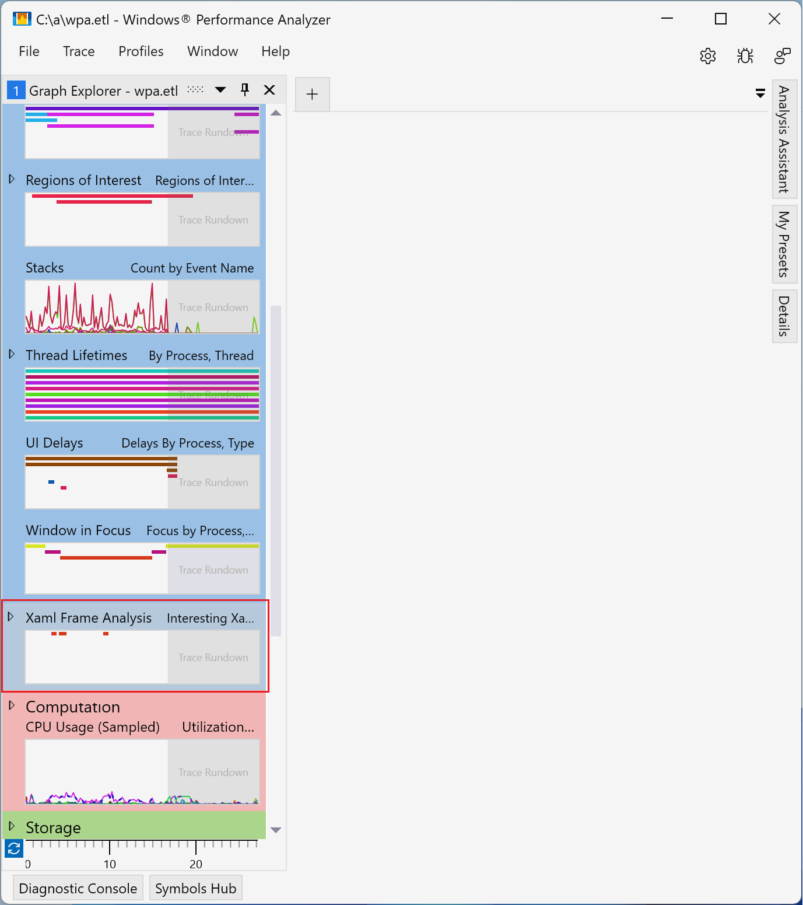
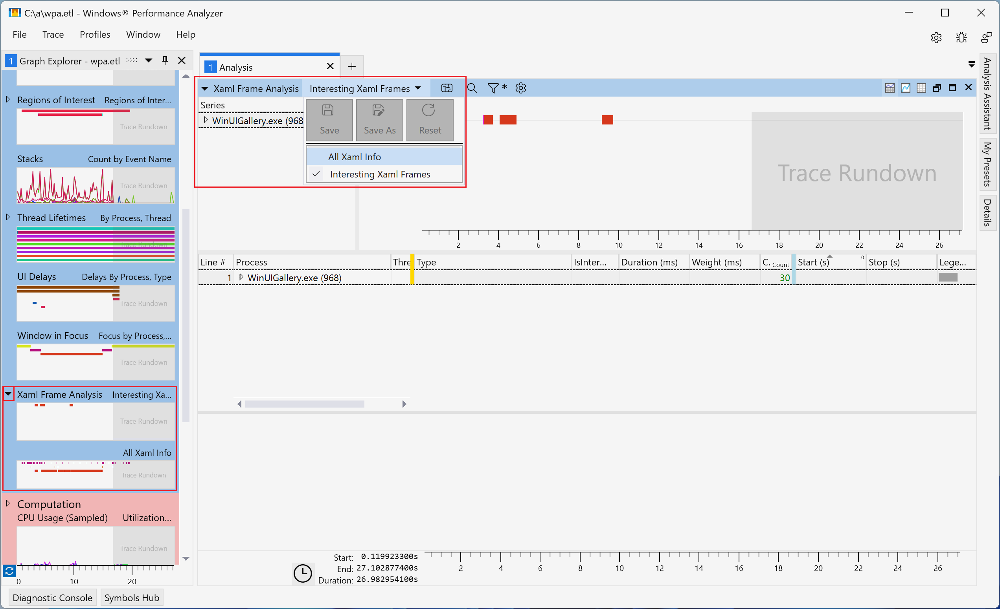
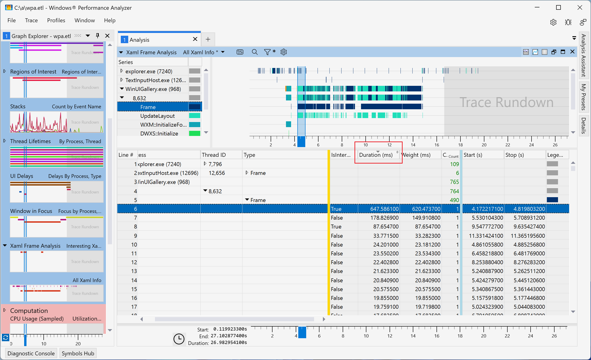

WinUI performance optimization
This topic describes how to use performance monitoring tools from the Windows Performance Toolkit to produce in-depth performance profiles for WinUI applications.
How do I use the Windows Performance Recorder to monitor WinUI apps?
The Windows Performance Recorder (WPR) can be used to create detailed Event Tracing for Windows (ETW) recordings of system and application behavior and resource usage based on built-in profiles. These ETW recordings can then be processed by the Windows Performance Analyzer (WPA) to produce a set of graphs and tables for easier consumption and in-depth analysis of CPU usage, power issues, poor system or application performance, and other performance issues.
Note
While there are both GUI and command-line versions of the WPR, this topic refers only to the GUI version (see Introduction to WPR for more details on both versions).
WPR profiles
WPR profiles are used to collect information on various aspects and behaviors of your app.
In the following image, the Windows Performance Recorder window is shown with the "CPU usage" profile (CPU utilization for each CPU on the system) and "XAML activity" profile (events from XAML-related providers, such as WinUI) selected.

How do I use the Windows Performance Analyzer with WinUI apps?
WinUI is a declarative, retained-mode API where the app describes a tree of UIElements and WinUI runs layout and renders it. This is done on the UI thread in batches called "frames", which should complete quickly, ideally within one refresh interval of the display. When frames run long, not only does it delay updates from making it to the display, but it also prevents the UI thread from handling input. Slow frames, while not the only reason for responsiveness problems, are one of the most common.
Install the "XAML Frame Analysis" plugin
WinUI logs ETW events that track the start and stop of each frame (shown in the following screenshot of the WPA "Generic Events" table). However, because the duration of each frame needs to be calculated manually, it's difficult to identify slow frame occurrences.

To address this issue, a new "XAML Frame Analysis" table plugin is included with the Windows Assessment Toolkit (ADK) preview, build 26020 and later. This table calculates and shows the duration of each frame (along with other time-consuming operations).
Note
While only the preview version of the Windows Performance Analyzer (WPA) has the "XAML Frame Analysis" table, the version of WPR used to take the trace does not matter.
Once the ADK preview is installed, the "XAML Frame Analysis" table must be enabled by editing the "perfcore.ini" config file in the WPA folder (typically, C:\Program Files (x86)\Windows Kits\10\Windows Performance Toolkit). To do this, close any open instances of WPA, open "perfcore.ini" in a text editor, add perf_xaml.dll to the list of dlls, and save and close the file. Restart WPA, which should now show the "XAML Frame Analysis" graph at the bottom of the System Activity section.

Use the "XAML Frame Analysis" plugin
The Xaml Frame Analysis supports two views (both views show the same columns):
- "Interesting Xaml Frames" (default) - Shows WinUI frames based on heuristics that identify those most likely to cause responsiveness problems. These correspond to regions that start with operations like WinUI initialization, frame navigation, or flyout display, and stop with the end of the next frame. These scenarios typically involve extensive changes to the UIElement tree and are the most susceptible to performance problems.
- "All Xaml Info" - Shows all WinUI frames from all process found in the trace. For operations like a frame or a layout pass, the plugin automatically computes and displays the durations based on the Start and Stop events.
The following screenshot highlights how to switch between Xaml Frame Analysis views.

Both Xaml Frame Analysis views include the following columns:
| Title | Value |
|---|---|
| Process | Process name and ID |
| Thread ID | Thread ID |
| Type | Describes the event corresponding to the row. Possible values include:
|
| IsInteresting | Whether the row is considered interesting. Only interesting rows show up in the Interesting Xaml Frames view. |
| Duration (ms) | The duration of the row. Computed from Start and Stop events. |
| Weight (ms) | The actual CPU execution time corresponding to the duration. |
| Start (s) | The time of the Start event |
| Stop (s) | The time of the Stop event |
Columns can be sorted by Type or Duration to help identify potential issues such as the most expensive, longest duration frames in the trace (see following image). You can also drill down into specific rows to identify the expensive operations and potential optimizations.
